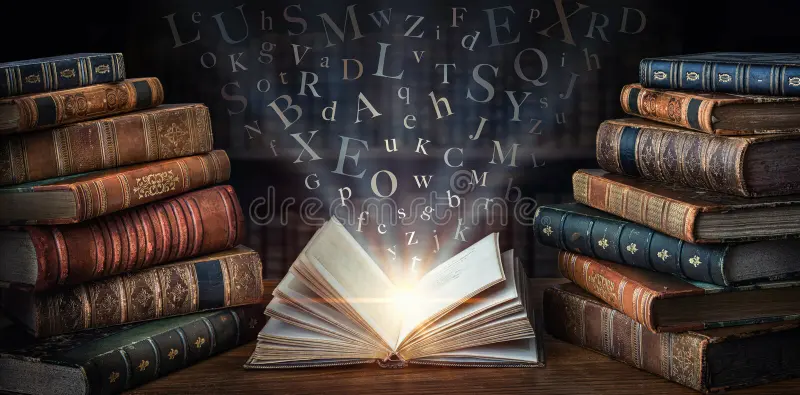
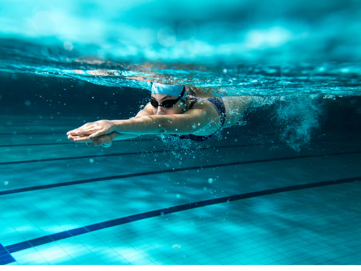

My Interests and Hobbies
Even though I am passionate about coding and computer science, I have many other hobbies and interests outside of school. Here are some of them!
Reading Books
I'm a big reader, and have read so many books. I mostly read different types of fiction as I don't like non-fiction too much. You will always see me reading a different book every week because I finish books that fast. Whenever I have free time, the only thing I do is read.
Top 3 Favorite Books of All Time:
- Divergent
- Harry Potter
- Twilight
Why I Love Reading:
I love reading because everything can be perfect than your life which makes you imagine that life. You can imagine anything you want based on the words, and it takes you to a different universe. Additonally some books you can just relate too.
Swimming
I love swimming so much. I have been swimming for 2 years and I am almost a master. I know all four strokes, freestyle, backstroke, breaststroke, and butterfly. I have not joined a swim team yet, but I look forward to it.
Why I Love Swimming:
I love swimming because it helps me clear my mind of all the things that happened throughout the week. I love the feeling of going in the water and pushing it when you do your stroke. Additonally, it helps with endurance and it gives a workout for your whole body.Its overall very relaxing for me.